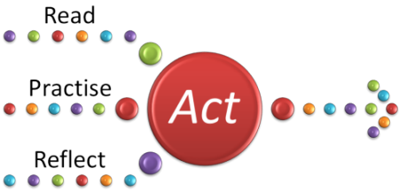

The Delta Module Two Professional Development Assignment

Overview of the PDA
The PDA comes in two parts: Part A and Part B. It looks like this:

Frequently asked questions
Q: What are the assessment
criteria?
A: The criteria are published by Cambridge but without any kind of
explanation of what they mean so ELT Concourse has produced a set of notes
explaining them all and giving you some advice concerning how to make sure you
meet them. Click
here to get that document.
Q: What are the word limits?
A:
For Part A, a total of 2500 words, not including anything you
write for the diagnostic lesson.
For Part B, 2000 words maximum (not including the lesson plan).
Q: What's the diagnostic lesson?
A: This is an unassessed lesson which you undertake early in a Delta
course. Its purpose is to help you focus on areas to develop in your
teaching practice. Centres will vary but you will usually have to write a
lesson plan at least and you will usually get both written and oral feedback on
the lesson.
This part of the assignment constitutes Part A, Stage 1 of the Professional
Development Assignment.
Q: Is observation involved in the PDA?
A: Yes. The diagnostic lesson is unassessed but a Delta
tutor observes it and gives you feedback.
In addition, you are required to undertake 10 hours of
observations of other teachers (live or on film) and the outcomes and insights should form
part of what you write in Part A.
Q: How is Part A broken down?
A:
Stage 1: the diagnostic lesson
Stage 2: you write an Action Plan for your development (1000 words)
Stage 3: you review progress and can set new targets or just carry on (650-750
words)
Stage 4: you review the overall success or otherwise of what you have
done, evaluate your procedures and actions and make a plan for the
future (650-750 words)
Q: What's
Part B?
A: It's called Experimental Practice. You write about, plan,
teach and evaluate a lesson centred on an approach, technique or set of
materials new to you.
Q: How is the PDA marked and graded?
A: The assignment is internally marked and graded as Pass or Fail.
There are no other grades.
Q: Do I have to complete the PDA?
A:
Yes. You can't submit your portfolio to Cambridge until you
have.
Q: Do I have to pass the PDA?
A: No, but you won't be eligible for a grade above Pass overall for
Module Two if you don't.
Q: Where can I get more detail?
A: Here:
| On Part A | Reflection and Action |
| On Part B | Experimental Practice |
| doing classroom research | This is a mini-course on this site to how to do research in the classroom which will give you usable results |
| The assessment criteria | This document sets out and explains the assessment criteria for the whole of the PDA |
| the Cambridge form | This is a copy of the form that tutors use to provide feedback on the PDA and record their comments |
| Teacher development | For some developmental ideas and suggestions |